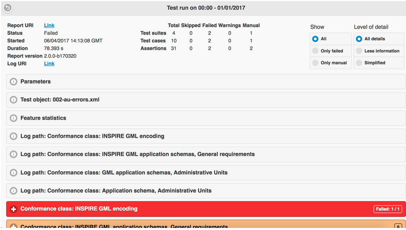

Inicio rápido de ETF¶
Nota
Este proyecto solo se incluye en el disco de máquina virtual OSGeoLive (VMDK)
ETF es un marco de pruebas de código abierto para validar datos espaciales, metadatos y servicios web en infraestructuras de datos espaciales (SDI). El diseño de ETF está impulsado por tres objetivos: ser fácil de usar, consistente con los estándares y capaz de probar todos los recursos en un SDI.
Esta Guía de Inicio Rápido describe cómo:
Navegar por la aplicación Web
Iniciar una prueba
supervisar una ejecución de prueba
ver y administrar informes de pruebas
Contenidos
Introducción¶
En el menú Start de OSGeoLive, seleccione . La aplicación tardará unos minutos en ponerse en marcha y abrirá una página web en http://localhost:9090/ETF
En el encabezado, hay un menú con 4 secciones, cada una de las cuales representa diferentes vistas y funcionalidades:

El primero es Start Test. En esta sección se enumeran todos los conjuntos de pruebas ejecutables disponibles (es decir, instalados). Dentro de esta sección, se puede seleccionar un conjunto de pruebas ejecutables y ejecutarlo en un objeto de prueba.
El segundo es Status. Este muestra todas las pruebas que se están ejecutando actualmente en el sistema y permite abrir una vista de monitor para ejecuciones de pruebas individuales para verificar el estado de cualquier prueba en ejecución. Además, los componentes cargados actualmente se muestran debajo de las pruebas en ejecución.
El tercero es Test reports. En este se pueden comprobar, analizar en detalle o descargar los resultados de cualquier prueba completada.
El cuarto es Help. Este es un enlace a la documentación. Dentro de él, hay guías sobre cómo usar todas las funcionalidades del ETF.
Iniciar prueba¶
Selección del conjunto de pruebas¶
La vista de aterrizaje muestra los conjuntos de pruebas ejecutables disponibles.

Se puede acceder a información adicional sobre un Test Suite haciendo clic en el botón +.

Esta información:
Incluye una descripción del Conjunto de pruebas.
Puede incluir un enlace al conjunto de pruebas abstractas del que se ha derivado el conjunto de pruebas ejecutables (Fuente).
Puede incluir las dependencias del conjunto de pruebas, que se ejecutan automáticamente con el conjunto de pruebas en una ejecución de pruebas (clases de conformidad de requisitos previos).
Puede incluir el nombre de las etiquetas asociadas que se utilizan para agrupar los conjuntos de pruebas en la vista.
Incluye el nombre de los tipos de objetos de prueba aplicables (que se explican en la siguiente sección).
Incluye información general como la versión, el autor y el último editor, las fechas de creación y cambio.
Para iniciar una ejecución de prueba, se debe seleccionar un conjunto de pruebas con un clic en el interruptor de giro use en el lado derecho.

Aparece un botón Start una vez que se selecciona al menos un conjunto de pruebas.
Un conjunto de pruebas solo se aplica a ciertos tipos de objetos de prueba, que se enumeran en la descripción. Se pueden seleccionar varios conjuntos de pruebas para una ejecución de prueba, pero deben ser aplicables al mismo tipo de objeto de prueba. Una vez que se selecciona un conjunto de pruebas, se deshabilita el interruptor de todos los demás conjuntos de pruebas que tienen diferentes tipos de objetos de prueba.

Un conjunto de pruebas puede depender de otros conjuntos de pruebas. Las dependencias también se muestran en la descripción de los conjuntos de pruebas. Estas dependencias también se ejecutan automáticamente durante la ejecución de la prueba.
Un clic en el botón Start* abrirá una nueva vista que pregunta al usuario sobre el recurso de destino que se va a probar.
Configuración de ejecución de prueba¶

El campo Label es obligatorio y se preestablece automáticamente con la hora y los nombres actuales de los conjuntos de pruebas seleccionados. La etiqueta se mostrará en la sección Test Reports y se puede cambiar para ayudar a encontrar el informe nuevamente después de una ejecución de prueba.
El estilo de la vista puede depender de los conjuntos de pruebas seleccionados.
Pruebas basadas en archivos¶
Los siguientes elementos se muestran cuando se han seleccionado conjuntos de pruebas que prueban uno o varios archivos de datos de prueba.
Si File Upload se selecciona como Data Sources, se pueden seleccionar uno o varios archivos locales y cargarlos en el ETF. El ETF solo acepta archivos con extensiones de archivo XML y GML, así como archivos ZIP que contengan estos dos tipos de archivos.
Nota
¡Otros archivos, como los archivos de definición de esquema, no se pueden usar y el ETF los ignora silenciosamente!

El tamaño máximo del archivo cargable se muestra cuando se mueve el ratón sobre el signo de interrogación.
Si los datos a probar están disponibles en la web, se pueden probar proporcionando una sola URL. Después de seleccionar Remote file (URL) como Data source, se puede introducir una Remote URL a un único archivo XML, GML o ZIP.

Si la URL requiere autenticación, se puede proporcionar el nombre de usuario y la contraseña haciendo clic en Credentials.

Pruebas de servicio¶
Los siguientes elementos se muestran cuando se han seleccionado conjuntos de pruebas que prueban un servicio.
La Service URL debe introducirse comenzando por http:// o https://.

Si el servicio requiere autenticación, se puede proporcionar el nombre de usuario y la contraseña haciendo clic en Credentials.
Dependencias y parámetros¶
El botón Test Suites muestra información básica sobre los conjuntos de pruebas seleccionados y, si corresponde, sobre las dependencias directas.

Si la prueba acepta parámetros, se muestran en la sección*Test Suite Parameters*. Los parámetros opcionales se pueden mostrar haciendo clic en el botón Optional Parameters. Se muestra una descripción de los parámetros cuando se mueve el ratón sobre el signo de interrogación.
Nota
En la mayoría de los casos se pueden utilizar los valores predeterminados preestablecidos.
Finalmente, la prueba se puede iniciar haciendo clic en el botón Start. A continuación, la vista cambia automáticamente a la vista Monitor Test Run.
Supervisar las ejecuciones de prueba¶
Después de iniciar una ejecución de prueba, se muestra la vista Monitor Test Run.

La barra azul indica el progreso.

El área de la consola muestra información y mensajes de resultados. La ejecución de prueba se puede cancelar con un clic en el botón Cancel.
La vista se puede cerrar, por ejemplo, con el botón X en la esquina superior izquierda. Además, cuando se cierra el explorador, la ejecución de Test Run continúa en el servidor.
Para volver a abrir la vista Monitor Test Run después de que se haya cerrado, seleccione en la barra de menús la sección Status. La sección Status muestra todas las pruebas en ejecución. Al hacer clic en la ejecución de prueba se abre la vista Monitor Test Run de esa ejecución de prueba.

Cuando finaliza una ejecución de prueba y se abre la vista Monitor Test Run, el informe de prueba se muestra automáticamente.
Informes de prueba¶
La sección Test Reports muestra todos los informes que se han generado a partir de ejecuciones de prueba.

Al hacer clic en el botón +, se muestra información para una ejecución de prueba, la hora de inicio, el estado del resultado de la prueba, el nombre del objeto de prueba y los conjuntos de pruebas utilizados.
Un informe de prueba se puede abrir de nuevo haciendo clic en el botón Open Report o se puede descargar como archivo HTML haciendo clic en el botón Download report.
El archivo de registro de la ejecución de prueba se puede inspeccionar con el botón Open log. Al hacer clic en el botón Delete Report, el informe se eliminará de forma permanente.
Inspeccionar informes de prueba¶
La parte superior de un informe de prueba muestra información general, incluido el estado general del resultado de la prueba, la hora de inicio, la duración y una tabla, que resume el estado de todas las pruebas en varios niveles.

Los informes de prueba son interactivos. El interruptor Show se puede utilizar para filtrar las pruebas Only failed o Only manual. La opción All desactiva el filtro.
El modificador Level of detail se utiliza para mostrar más o menos información en los informes.
Los resultados de la prueba se resumen jerárquicamente en un informe. En el nivel superior están las Test Suites.
Al hacer clic en un conjunto de pruebas, se muestra una descripción y todas las pruebas de nivel inferior en ese conjunto de pruebas. Los errores en un conjunto de pruebas pueden ser reconocidos inmediatamente por el color rojo. El número de pruebas fallidas se muestra en la esquina superior derecha.

El color verde indica una prueba superada. Las pruebas aprobadas, que requieren pasos de prueba manuales adicionales que no se pudieron automatizar, son de color naranja. El color naranja también puede indicar una prueba que se ha omitido porque depende de otra prueba que haya fallado. El estado exacto se puede encontrar debajo de la descripción.
El número de niveles depende del objeto de prueba probado. Si se han ejecutado pruebas de servicio, la jerarquía es la siguiente:
Conjuntos de pruebas ejecutables
Módulos de prueba (agrupa casos de prueba)
Casos de prueba (agrupa pasos de prueba)
Pasos de prueba (interacciones con el servicio, agrupa aserciones de prueba)
Aserciones de prueba (pruebas atómicas)
En una prueba basada en archivos, los módulos de prueba y los pasos de prueba no existen y no se muestran en el informe.
Cada prueba enumera los requisitos y proporciona una descripción sobre cómo se prueban. La prueba puede incluir un enlace a un conjunto de pruebas abstractas, de la que se ha derivado la prueba (Source).

Las aserciones representan consultas de prueba atómica en el nivel más bajo. Error, las aserciones de color rojo muestran mensajes de error en la sección Messages.

También se puede encontrar información útil en el siguiente nivel superior, como, por ejemplo, la respuesta de un servicio en el nivel Test Step (tenga en cuenta el enlace Open saved response en el informe).

Recursos¶
Usando las instrucciones proporcionadas anteriormente, encuentre a continuación un conjunto predefinido de recursos que puede probar en el ETF:
Conjuntos de datos GML: algunos conjuntos de datos predefinidos se pueden descargar desde aquí.
Servicios WMS: una lista de servicios está disponible aquí.
Servicios de WFS: una lista de servicios está disponible aquí.
Nota
Algunos de los conjuntos de datos GML proporcionados anteriormente no pasan todas las pruebas, por lo que puede intentar corregirlos (en función de los errores informados en el informe de prueba) antes de validarlos nuevamente hasta que todas las pruebas se realicen correctamente.
What next?¶
Esta fue solo una breve descripción del ETF. Hay más información en la instalación de demostración y en el ETF GitHub space.
Por favor, compruebe también: